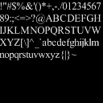
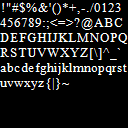
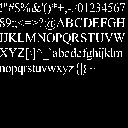
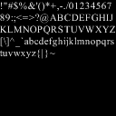
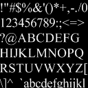
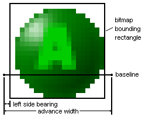
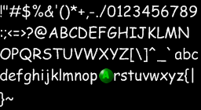
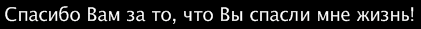

Author: Gary Kacmarcik (garykac@microsoft.com)
Revision: 30 August 2006
The bmfontgen application is a command line utility which can convert a TrueType or OpenType font into a bitmap font. A bitmap font consists of one or more images plus an XML descriptor file which identifies the location of each glyph in the bitmap images along with additional font metric data. These bitmap fonts can be useful in game development where one cannot assume that the game platform provides a font renderer.
This document describes how to create bitmap fonts and how to use them in the XNA programming environment.
There are a number of bitmap font creation applications available. The bmfontgen application differs from most in that it:
While bmfontgen strives to provide full Unicode character support, it is worth noting the following limitations:
Other limitations include:
Some of these limitations may be removed in later versions.
The most basic operation of bmfontgen requires that you specify a font and an output file name.
bmfontgen -name "Courier New" -size 12 -output "courier"
This command will create a bitmap font with the default set of characters. The font will be based on 12 point "Courier New" and be saved it in "courier.xml" and "courier-0.png".
Alternately, you can use the Windows interface to choose a font using the -fontdialog option:
bmfontgen -fontdialog -output "font"
This will bring up the standard Windows font selection dialog and allow you to select the font interactively.
To load and render bitmap fonts created with bmfontgen, you'll want to make use of the BitmapFont class. This rest of this section contains sample code that makes use of the BitmapFont class to display a single text string in a window.
The basic procedure is:
Here is the sample code for a simple application that displays a string. Most of the code is from the XNA template - the font-related code is highlighted in green.
using System;
using Microsoft.Xna.Framework;
using Microsoft.Xna.Framework.Graphics;
using XNAExtras;
namespace SimpleFontTest
{
class SimpleFontTest : Microsoft.Xna.Framework.Game
{
private BitmapFont m_font;
private Microsoft.Xna.Framework.Components.GraphicsComponent m_graphics;
public SimpleFontTest()
{
m_graphics = new Microsoft.Xna.Framework.Components.GraphicsComponent();
this.GameComponents.Add(m_graphics);
}
protected override void OnStarting()
{
base.OnStarting();
m_graphics.GraphicsDevice.DeviceReset += new EventHandler(GraphicsDevice_DeviceReset);
// create the font
m_font = new BitmapFont("font.xml");
LoadResources();
}
void GraphicsDevice_DeviceReset(object sender, EventArgs e)
{
LoadResources();
}
void LoadResources()
{
// reset the font when the GraphicsDevice changes
m_font.Reset(m_graphics.GraphicsDevice);
}
protected override void Draw()
{
// Make sure we have a valid device
if (!m_graphics.EnsureDevice())
return;
m_graphics.GraphicsDevice.Clear(Color.CornflowerBlue);
m_graphics.GraphicsDevice.BeginScene();
// draw the string
m_font.DrawString(20, 20, Color.DarkBlue, "Sample string");
m_graphics.GraphicsDevice.EndScene();
m_graphics.GraphicsDevice.Present();
}
}
}
A number of overloads for DrawString are provided that allow parameters like the (x,y) position and color to be omitted. When these parameters are not present, the text color and position is determined by the previous DrawString call.
Note that the BitmapFont class currently provides only basic text rendering capabilities. It does not justify text or provide word wrap capabilities. It also does not support most advanced text rendering options, like bidirectional (or even right-to-left) text, complex ligatures, non-spacing marks and contextual forms.
While not required, choosing an appropriate text rendering hint value when creating the font can improve the appearance of the bitmap font, especially at small point sizes.
The TextRenderingHint is specified via the -trh option. There are five possible hint values that can be used:
aa : Anti-aliased
aa-grid : Anti-aliased with grid fit
ct-grid : ClearType with grid fit
1bpp : One bit per pixel
1bpp-grid : One bit per pixel with grid fit
For example, to set the hint to enable anti-aliasing, the following option would be used:
-trh aa
The difference between the various options is demonstrated in the following table, which shows Times New Roman 10pt using each of the text rendering hint options:
|  | |
 |  | |
| aa | aa-grid | ct-grid | 1bpp | 1bpp-grid |
Note that at smaller point sizes, the aa hint can result in a text that is not as bright as that produced with one of the gridfit hints. The point at which this happens varies from font to font, but seems common at font sizes less than 12 pts. The following table shows Times New Roman at different point sizes rendered using the aa hint:
|  |  |
 |  | |
| Times 8pt | Times 10pt | Times 12pt | Times 14pt | Times 16pt |
To help avoid these rendering problems, bmfontgen uses the following defaults: aa-grid for point sizes less than 12; and aa for point sizes 12 and larger. Users are strongly encouraged to evaluate the different TextRenderingHints when creating fonts that are 12 points or less in size.
Option files are text files that contain all of the options needed to create a single font. They are useful when the number of options being specified on the command line becomes large, or when certain extended options are required.
A simple option file is:
-name "Courier New" -size 12 -output courier12
Note that there is one option per line in an option file. To use an options file to create a font, use the -optfile option with the name of the options file.
bmfontgen -optfile font_options.txt
The following rules apply to options in an option file:
No line may be longer than 128 characters
Each option line must begin with a hyphen ('-')
Lines that do not begin with a hyphen are treated as comments and are ignored.
Comments may not appear on the same line as an option
Any option that can be used on the command line can also be specified in an options file. There is also an additional set of options (called "extended options" - see the next section for more information) that are only valid when used within an options file. In addition, some options (like -range and -source) are permitted multiple times in an options file, whereas they are only allowed once on the command line.
While most options can be specified directly on the command line, there is a small set of options that can only be specified in an options file. These options are known as extended options. These options are considered to be more complex than the other options because of the number of parameters that they require and it is this complexity that restricts them to the options file.
Currently, the only extended option is -custom.
Information on each extended option can be found in Appendix A.
It is often desirable to add a few special characters to a font, so that these symbols can be written out in a string of text. Custom characters can be added (or used to replace existing characters) by using the -custom extended option.
As an example, to replace the letter 'q' in a font with a custom image, simply add the following extended option to your options file (custom glyphs can only be specified in an options files):
-custom 0071 abxy.png 0 0 20 20 16 21 0
This will replace Unicode codepoint 0071 ('q') with the portion of the "abxy.png" bitmap defined by the (0,0, 20,20) rectangle. The final three options are the baseline (measured from the top of the bitmap rectangle), advance width and the left side bearing. These last options are used to position the glyph relative to the other characters and to specify the spacing around the glyph, as shown in the following figure.
 |
 |
| "abxy.png" | Custom glyph extracted from "abxy.png" with metrics |
When this option is used with a 14 point "Comic Sans MS" font, the following bitmap font is created.
|  |
| Font bitmap with the 'q' character replaced by a custom glyph |
Once the font has been created in this manner, the custom glyph will be displayed instead of the original character. In this example, drawing the string "Press the q button to switch weapons" would display as follows:
 |
When used in a real game, a character other then ‘q’ would likely be chosen. Any valid Unicode character can be replaced in this fashion.
By default, the font will contain the standard A-Z upper and lower case plus the standard punctuation marks (all Unicode code points from 0020 to 007E). While this range is appropriate for English and a few other languages, there are many languages which require additional characters.
To change the range of characters that are included in the generated font, you can use the -range option. A single range can be specified directly on the command line:
-range 0000-00ff
or multiple ranges can be specified in an options file:
-range 0020-007e -range 00a0-00ff -range 0152-0153
Range values must be specified as 4 hex digits and must be connect by a single hyphen. No spaces are allowed in the range specification.
If you specify a range value, then the default range (0020-007E) will not be used. Thus, if you want basic Latin character support (including punctuation marks), you need to add characters from this range into your range specifications.
Here is a sample options file that creates a Russian font from “Lucida Sans Unicode”
-name "Lucida Sans Unicode" -size 14 -output russian -range 0020-007e -range 0400-04ff
Drawing the string "Спасибо Вам за то, что Вы спасли мне жизнь!" with this font produces:
|  |
Chinese, Japanese and Korean fonts are somewhat more challenging to generate because of the large number of glyphs present in those fonts. There can be 10’s of thousands of characters in a single CJK font, most of which will not be used. While this problem can be partially addressed using the -range option, that approach is unwieldy and potentially problematic since there is no guarantee that the defined ranges contain all of the required characters.
To address this problem, bmfontgen permits a character-source file to be defined that contains the set of all characters that needs to be included in the font. Characters do not need to occur uniquely in this file – a character may occur multiple times in this file and it will be defined only once in the created font. This allows a dialog script or even source code to be used as a character-source file. The only restriction is that the file must be UTF-8 encoded (with/without a BOM char).
Character-source file are specified with the -source option. A single character-source file can be specified directly on the command line:
-source game_dialog.txt
or multiple character-source files can be specified in an options file:
-source dialog.cs -source messages.cs -source about.cs
While this option was originally intended to provide support for CJK fonts, it can be used when creating fonts for any language. The -source option can be used as a safeguard to ensure that all required characters are present.
Here is a sample options file that creates a Japanese font from "ＭＳ Ｐゴシック", including a standard set of Latin and Japanese characters plus all characters from the "japanese.txt" file.
-name "ＭＳ Ｐゴシック" -size 14 -output japanese -bmsize 256 -range 0020-007e -range 3000-3100 -source japanese.txt
Using this font to display the string "お兄ちゃ… お兄ちゃんなんか大っ嫌い！" produces this output:
 |
This section provides a brief description of each option available in bmfontgen. Unless otherwise specified, these options may be specified on the command line and may only occur once. Extended options (that can only be specified in an options file) and options that are permitted more than once (but only in an options file), are noted in the description.
Normally the font image bitmap is created with a transparent background and white text. This can make it difficult to review the font to evaluate how well the glyphs are formed since most image display programs show the image on a white background. This option will force the bitmap to be created with a black background so that the characters show up clearly.
Note that this option should not be used when creating the final font bitmap.
By default, the font bitmap size is 256x256. This option allows the user to change the size of each bitmap to any value from 64 to 1024. The size value is used to set both the height and the width of the font bitmap. Sizes that are an integral power of 2 are recommended, but not required (a warning is issued when a non-power-of-2 value is used).
Create a bold version of the specified font. This option is ignored if the –fontdialog option is used.
Other font style options include -italic, -strikeout and -underline.
Define a custom glyph to replace the standard glyph (if any) in the font for the specified character. The character is automatically added to the list of characters included in the font (so a separate -range option is not necessary).
Note: This is an extended option and my only appear in an options file.
The arguments for this option are:
ch : the Unicode character, encoded as a 4 hex digit value
file : the file that contains the custom glyph bitmap
x, y : the origin of the glyph in the bitmap
w, h : the width and height of the glyph in the bitmap
base : the baseline of the glyph, measured from the origin of the glyph's bounding rectangle
aw : the advance width – the horizontal distance to advance the pen after drawing this character
lsb : the left side bearing – the horizontal distance from the pen starting position to the left side of the glyph bitmap
The -custom option may appear multiple times, but each option should describe a separate character. If multiple custom options appear for the same character, only the last one will be used.
Use the OS’s font selection dialog to interactively select the font name, size and style.
This option can be used instead of the -name and -size/-pxsize options. If this option is used, the -bold, -italic, -strikeout and -underline options are ignored.
Create an italic version of the specified font. This option is ignored if the –fontdialog option is used.
Other font style options include -bold, -strikeout and -underline.
Produce a list of available fonts and print it to stdout.
Note that because of codepage issues, fonts that have localized names may not display correctly when written to the console. To avoid this problem, use –listfontsfile which will write the list of available fonts into a file.
Same as –listfonts, but the font list is written into a UTF-8 encoded text file instead of printed to stdout. This option is useful when there are installed fonts that have localized names since these names can be mangled when printed to the console.
The name of the font to create.
This option, along with the -size/-pxsize option, is required unless the –fontdialog option is used.
Don’t issue any warnings.
Don’t issue a warning if a glyph in the requested range is missing from the font.
Read the options from the specified file instead of from the command line. Note that some options (“extended options”) can only be specified in an options file. See “Using an options file” in Section II for more information.
The base filename for the output files. The base filename is restricted to no more than 50 characters in length.
For basic fonts, the extension “.png” and “.xml” will be added to the font image and font xml description files, respectively. If more than one image is required to encode the font, a numeric value will be added to the base filename.
This is a required option.
Specify a start and end character range to include in the font. By default the range is 0020 to 007E. The start and end character values must be Unicode code points and must be encoded as 4 hex digit values.
If you specify a range, then the default range (0020-007E) will not be used. If you want to include basic latin support, then you need to include this range in your range specification.
Note that the -range option may only be specified once on the command line.
To define multiple disjoint character ranges for a font, use this option in an options file. The -range option may be specified multiple times in an option file and the union of all defined ranges will be used for the font. See “Using an options file” in Section II for more information about using option files.
Specify the size of the font in points. Only font sizes from 7 to 50 points are supported. This option may not be used in conjunction with the –pxsize option.
Specify a character-source file that contains the set of characters that should be included in the font. The file must be UTF-8 encoded (note that 7-bit ASCII encoded files are valid UTF-8 files); the 3-byte UTF-8 BOM character is not required and is ignored if present.
When this option is used, the default character range (0020-007E) will be ignored. If this option is used in conjunction with the -range option, the font will contain the union of all characters specified by the two options.
Note that the -source option may only be specified once on the command line.
To define multiple character-source files, use this option in an options file. The -source option may be specified multiple times in an option file and the union of all characters will be used for the font. See “Using an options file” in Section II for more information about using option files.
Create a strikeout version of the specified font. This option is ignored if the –fontdialog option is used.
Other font style options include -bold, -italic and -underline.
Set the TextRenderingHint, which can help the GDI+ text rendering engine produce better font bitmaps. The hint value can be any of:
1bpp : Use one bit per pixel
1bpp-grid : Use one bit per pixel and fit the glyphs to a display grid
aa : Enable anti-aliasing
aa-grid : Enable anti-aliasing and fit the glyphs to a display grid
ct-grid : Use ClearType rendering and fit the glyphs to a display grid
Create an underlined version of the specified font. This option is ignored if the –fontdialog option is used.
Other font style options include -bold, -italic and -strikeout.
Verbose output - display lots of extraneous information while the font is being created.